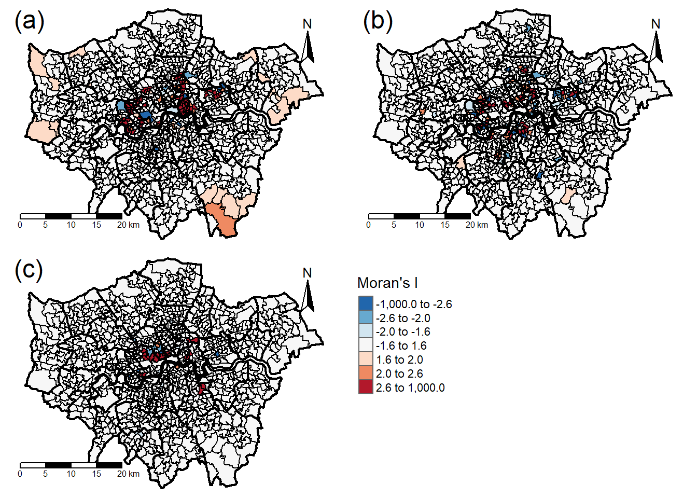
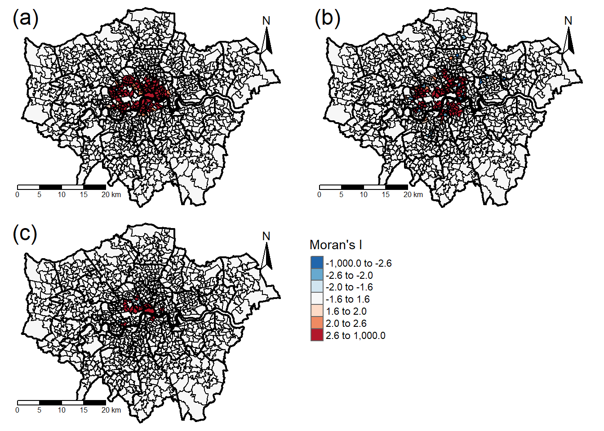

# Read in code points.
AllCodePoints <- read_csv("Data/Schools and Health/OS Point Codes/Data/AllCodePoints.csv",
locale = locale(encoding = "latin1"),
na = "n/a")## Parsed with column specification:
## cols(
## Postcode = col_character(),
## Eastings = col_double(),
## Northings = col_double()
## )# Read in data.
Schools <- read_csv("Data/Schools and Health/All School Locations 2016.csv",
locale = locale(encoding = "latin1"),
na = "n/a")## Parsed with column specification:
## cols(
## .default = col_character(),
## OBJECTID = col_number(),
## URN = col_double(),
## EASTING = col_double(),
## NORTHING = col_double(),
## NEW_URN = col_logical(),
## OLD_URN = col_logical(),
## map_icon_l = col_double(),
## Primary = col_double(),
## x = col_double(),
## y = col_double()
## )## See spec(...) for full column specifications.GPs <- read_csv("Data/Schools and Health/GP Locations.csv",
locale = locale(encoding = "latin1"),
na = "n/a")## Parsed with column specification:
## cols(
## .default = col_character(),
## `Value (NHS.UK users rating)` = col_double(),
## `Banding Classification (NHS.UK users rating)` = col_double(),
## `Value (Registered patients)` = col_double(),
## `Banding Classification (Registered patients)` = col_logical(),
## `Banding Classification (Weekday evening and weekend appointments offered here or nearby)` = col_logical()
## )
## See spec(...) for full column specifications.Hospitals <- read_csv("Data/Schools and Health/Hospital Locations.csv",
locale = locale(encoding = "latin1"),
na = "n/a")## Parsed with column specification:
## cols(
## .default = col_character(),
## `Value (NHS.UK users rating)` = col_double(),
## `Banding Classification (NHS.UK users rating)` = col_double(),
## `Value (Care Quality Commission inspection ratings)` = col_double(),
## `Value (Recommended by staff)` = col_double(),
## `Value (Mortality rate (in hospital and up to 30 days after discharge))` = col_double(),
## `A&E (A&E onsite Comparison)` = col_logical()
## )
## See spec(...) for full column specifications.# Select the necessary columns.
Schools <- Schools[,c(3, 8)]
GPs <- GPs[,c(1, 9)]
Hospitals <- Hospitals[,c(1, 9)]
# Rename Columns.
colnames(Schools) <- c("Name", "Postcode")
colnames(GPs) <- c("Name", "Postcode")
colnames(Hospitals) <- c("Name", "Postcode")
# Classify data.
Schools$Type <- "School"
GPs$Type <- "GP"
Hospitals$Type <- "Hospital"
# Merge school, GP and hospital points.
Locations <- rbind(Schools, GPs, Hospitals)
# Remove space in postcodes
Locations$Postcode <- gsub(" ","", Locations$Postcode)
# Attach code points.
Locations<-merge(Locations,
AllCodePoints,
by.x="Postcode",
by.y="Postcode",
no.dups = TRUE)
# Reorder columns
Locations <- Locations[,c(2, 1, 3, 4, 5)]
# Remove duplicates.
Locations <- Locations[!duplicated(Locations$Name), ]# Convert location coordinates into point geometry.
SFLocations <- st_as_sf(Locations, coords = c("Eastings", "Northings"), crs = BNG)
# Transform CRS into WGS84.
SFLocations <- st_transform(SFLocations, WGS84)
# Select points inside London.
SFLocations <- SFLocations[SFLAD,]## although coordinates are longitude/latitude, st_intersects assumes that they are planar
## although coordinates are longitude/latitude, st_intersects assumes that they are planar# Extract concentrations.
SFLocations$`NO2 (µg/m³)`<- raster::extract(PollutionConc[[1]], SFLocations)
SFLocations$`PM2.5 (µg/m³)`<- raster::extract(PollutionConc[[2]], SFLocations)
# Round concentrations to 2 d.p..
SFLocations$`NO2 (µg/m³)` <- round(SFLocations$`NO2 (µg/m³)`, digits = 2)
SFLocations$`PM2.5 (µg/m³)` <- round(SFLocations$`PM2.5 (µg/m³)`, digits = 2)
# Rename columns.
colnames(SFLocations) <- c("Building Name", "Postcode", "Building Type", "geometry", "NO2 (µg/m³)", "PM2.5 (µg/m³)")
# Extract schools, GPs and hospitals that exceed WHO guides
SFLocationsNO2 <- SFLocations %>% filter(`NO2 (µg/m³)` > 40)
SFLocationsPM2.5 <- SFLocations %>% filter(`PM2.5 (µg/m³)` > 10)
# Subset data
SFSchools <- subset(SFLocations, `Building Type` == "School")
SFGPs <- subset(SFLocations, `Building Type` == "GP")
SFHospitals <- subset(SFLocations, `Building Type` == "Hospital")
SFSchoolsNO2 <- subset(SFLocationsNO2, `Building Type` == "School")
SFGPsNO2 <- subset(SFLocationsNO2, `Building Type` == "GP")
SFHospitalsNO2 <- subset(SFLocationsNO2, `Building Type` == "Hospital")
SFSchoolsPM2.5 <- subset(SFLocationsPM2.5, `Building Type` == "School")
SFGPsPM2.5 <- subset(SFLocationsPM2.5, `Building Type` == "GP")
SFHospitalsPM2.5 <- subset(SFLocationsPM2.5, `Building Type` == "Hospital")# Convert SF objects into SP objects
SPPointCluster <- as(SFMSOA, "Spatial")
SPSchools <- as(SFSchools, "Spatial")
SPGPs <- as(SFGPs, "Spatial")
SPHospitals <- as(SFHospitals, "Spatial")
SPSchoolsNO2 <- as(SFSchoolsNO2, "Spatial")
SPGPsNO2 <- as(SFGPsNO2, "Spatial")
SPHospitalsNO2 <- as(SFHospitalsNO2, "Spatial")
SPSchoolsPM2.5 <- as(SFSchoolsPM2.5, "Spatial")
SPGPsPM2.5 <- as(SFGPsPM2.5, "Spatial")
SPHospitalsPM2.5 <- as(SFHospitalsPM2.5, "Spatial")
# Transform CRS to BNG (a projected CRS).
SPPointCluster <- spTransform(SPPointCluster, BNG)
SPSchools <- spTransform(SPSchools, BNG)
SPGPs <- spTransform(SPGPs, BNG)
SPHospitals <- spTransform(SPHospitals, BNG)
SPSchoolsNO2 <- spTransform(SPSchoolsNO2, BNG)
SPGPsNO2 <- spTransform(SPGPsNO2, BNG)
SPHospitalsNO2 <- spTransform(SPHospitalsNO2, BNG)
SPSchoolsPM2.5 <- spTransform(SPSchoolsPM2.5, BNG)
SPGPsPM2.5 <- spTransform(SPGPsPM2.5, BNG)
SPHospitalsPM2.5 <- spTransform(SPHospitalsPM2.5, BNG)
# Count the number of points in each MSOA.
SPPointCluster@data$SchoolCount <- poly.counts(SPSchools, SPPointCluster)
SPPointCluster@data$GPCount <- poly.counts(SPGPs, SPPointCluster)
SPPointCluster@data$HospitalCount <- poly.counts(SPHospitals, SPPointCluster)
SPPointCluster@data$SchoolNO2Count <- poly.counts(SPSchoolsNO2, SPPointCluster)
SPPointCluster@data$GPNO2Count <- poly.counts(SPGPsNO2, SPPointCluster)
SPPointCluster@data$HospitalNO2Count <- poly.counts(SPHospitalsNO2, SPPointCluster)
SPPointCluster@data$SchoolPM2.5Count <- poly.counts(SPSchoolsPM2.5, SPPointCluster)
SPPointCluster@data$GPPM2.5Count <- poly.counts(SPGPsPM2.5, SPPointCluster)
SPPointCluster@data$HospitalPM2.5Count <- poly.counts(SPHospitalsPM2.5, SPPointCluster)
# Calculate point density.
SPPointCluster@data$SchoolDensity <- round(SPPointCluster@data$SchoolCount/(poly.areas(SPPointCluster)/1000000), digits = 3)
SPPointCluster@data$GPDensity <- round(SPPointCluster@data$GPCount/(poly.areas(SPPointCluster)/1000000), digits = 3)
SPPointCluster@data$HospitalDensity <- round(SPPointCluster@data$HospitalCount/(poly.areas(SPPointCluster)/1000000), digits = 3)
SPPointCluster@data$SchoolNO2Density <- round(SPPointCluster@data$SchoolNO2Count/(poly.areas(SPPointCluster)/1000000), digits = 3)
SPPointCluster@data$GPNO2Density <- round(SPPointCluster@data$GPNO2Count/(poly.areas(SPPointCluster)/1000000), digits = 3)
SPPointCluster@data$HospitalNO2Density <- round(SPPointCluster@data$HospitalNO2Count/ (poly.areas(SPPointCluster)/1000000), digits = 3)
SPPointCluster@data$SchoolPM2.5Density <- round(SPPointCluster@data$SchoolPM2.5Count/ (poly.areas(SPPointCluster)/1000000), digits = 3)
SPPointCluster@data$GPPM2.5Density <- round(SPPointCluster@data$GPPM2.5Count/ (poly.areas(SPPointCluster)/1000000), digits = 3)
SPPointCluster@data$HospitalPM2.5Density <- round(SPPointCluster@data$HospitalPM2.5Count / (poly.areas(SPPointCluster)/1000000), digits = 3)
# Conduct global Moran's I.
GlbMIAllSchool <- moran.test(SPPointCluster@data$SchoolDensity, SpWeightsMSOA)
GlbMIAllGP <- moran.test(SPPointCluster@data$GPDensity, SpWeightsMSOA)
GlbMIAllHospital <- moran.test(SPPointCluster@data$HospitalDensity, SpWeightsMSOA)
GlbMINO2School <- moran.test(SPPointCluster@data$SchoolNO2Density, SpWeightsMSOA)
GlbMINO2GP <- moran.test(SPPointCluster@data$GPNO2Density, SpWeightsMSOA)
GlbMINO2Hospital <- moran.test(SPPointCluster@data$HospitalNO2Density, SpWeightsMSOA)
GlbMIPM2.5School <- moran.test(SPPointCluster@data$SchoolPM2.5Density, SpWeightsMSOA)
GlbMIPM2.5GP <- moran.test(SPPointCluster@data$GPPM2.5Density, SpWeightsMSOA)
GlbMIPM2.5Hospital <- moran.test(SPPointCluster@data$HospitalPM2.5Density, SpWeightsMSOA)
# Conduct local Moran's I.
lclMIAllSchool <- round(localmoran(SPPointCluster@data$SchoolDensity, SpWeightsMSOA), digits = 3)
lclMIAllGP <- round(localmoran(SPPointCluster@data$GPDensity, SpWeightsMSOA), digits = 3)
lclMIAllHospital <- round(localmoran(SPPointCluster@data$HospitalDensity, SpWeightsMSOA), digits = 3)
lclMINO2School <- round(localmoran(SPPointCluster@data$SchoolNO2Density, SpWeightsMSOA), digits = 3)
lclMINO2GP <- round(localmoran(SPPointCluster@data$GPNO2Density, SpWeightsMSOA), digits = 3)
lclMINO2Hospital <- round(localmoran(SPPointCluster@data$HospitalNO2Density, SpWeightsMSOA), digits = 3)
lclMIPM2.5School <- round(localmoran(SPPointCluster@data$SchoolPM2.5Density, SpWeightsMSOA), digits = 3)
lclMIPM2.5GP <- round(localmoran(SPPointCluster@data$GPPM2.5Density, SpWeightsMSOA), digits = 3)
lclMIPM2.5Hospital <- round(localmoran(SPPointCluster@data$HospitalPM2.5Density, SpWeightsMSOA), digits = 3)
# Join local Moran's I Z values to shape file.
SPPointCluster$lclMIAllSchool <- lclMIAllSchool[,4]
SPPointCluster$lclMIAllGP <- lclMIAllGP[,4]
SPPointCluster$lclMIAllHospital <- lclMIAllHospital[,4]
SPPointCluster$lclMINO2School <- lclMINO2School[,4]
SPPointCluster$lclMINO2GP <- lclMINO2GP[,4]
SPPointCluster$lclMINO2Hospital <- lclMINO2Hospital[,4]
SPPointCluster$lclMIPM2.5School <- lclMIPM2.5School[,4]
SPPointCluster$lclMIPM2.5GP <- lclMIPM2.5GP[,4]
SPPointCluster$lclMIPM2.5Hospital <- lclMIPM2.5Hospital[,4]
# Convert SP MSOA data into a data frame.
SFPointCluster <- st_as_sf(SPPointCluster)
# Transform CRS to WGS
SFPointCluster <- st_transform(SFPointCluster, WGS84)
# Rename columns
colnames(SFPointCluster) <- c("MSOA Code", "MSOA Name", "LAD Name", "LAD Code", "Mean NO2 Conc.", "Mean PM2.5 Conc.", "School (All) Count", "GP (All) Count", "Hospital (All) Count", "School (NO2) Count", "GP (NO2) Count", "Hospital (NO2) Count", "School (PM2.5) Count", "GP (PM2.5) Count", "Hospital (PM2.5) Count", "School (All) Density", "GP (All) Density", "Hospital (All) Density", "School (NO2) Density", "GP (NO2) Density", "Hospital (NO2) Density", "School (PM2.5) Density", "GP (PM2.5) Density", "Hospital (PM2.5) Density", "School (All) Moran's I", "GP (All) Moran's I", "Hospital (All) Moran's I", "School (NO2) Moran's I", "GP (NO2) Moran's I", "Hospital (NO2) Moran's I", "School (PM2.5) Moran's I", "GP (PM2.5) Moran's I", "Hospital (PM2.5) Moran's I", "geometry")
# Subset Data
SFPointCluster_SchoolsAll <- SFPointCluster[, c(25, 34)]
SFPointCluster_GPsAll <- SFPointCluster[, c(26, 34)]
SFPointCluster_HospitalsAll <- SFPointCluster[, c(27, 34)]
SFPointCluster_SchoolsNO2 <- SFPointCluster[, c(28, 34)]
SFPointCluster_GPsNO2 <- SFPointCluster[, c(29, 34)]
SFPointCluster_HospitalsNO2 <- SFPointCluster[, c(30, 34)]
SFPointCluster_SchoolsPM2.5 <- SFPointCluster[, c(31, 34)]
SFPointCluster_GPsPM2.5 <- SFPointCluster[, c(32, 34)]
SFPointCluster_HospitalsPM2.5 <- SFPointCluster[, c(33, 34)]
# Rename columns.
colnames(SFPointCluster_SchoolsAll) <- c("Moran's I", "geometry")
colnames(SFPointCluster_GPsAll) <- c("Moran's I", "geometry")
colnames(SFPointCluster_HospitalsAll) <- c("Moran's I", "geometry")
colnames(SFPointCluster_SchoolsNO2) <- c("Moran's I", "geometry")
colnames(SFPointCluster_GPsNO2) <- c("Moran's I", "geometry")
colnames(SFPointCluster_HospitalsNO2) <- c("Moran's I", "geometry")
colnames(SFPointCluster_SchoolsPM2.5) <- c("Moran's I", "geometry")
colnames(SFPointCluster_GPsPM2.5) <- c("Moran's I", "geometry")
colnames(SFPointCluster_HospitalsPM2.5) <- c("Moran's I", "geometry")
# Map Moran's I.
All_Schools_MoransI <- tm_shape(SFPointCluster_SchoolsAll) +
tm_polygons(col = "Moran's I",
palette = PalMi,
breaks = BrksMi,
midpoint = 0)+
tm_shape(LAD) +
tm_polygons(col = NA, alpha = 0, border.col = "black", lwd = 2.0) +
tm_shape(MSOA) +
tm_polygons(col = NA, alpha = 0, border.col = "black", lwd = 1.0)+
tm_layout(aes.palette = list(seq = "-RdYlBu"),
frame = FALSE)+
tm_legend(show = FALSE)+
tm_scale_bar(position = c("left", "bottom"))+
tm_compass(north = 0, position = c("right", "top"))+
tm_credits("(a)", position=c(0,0.85), size=1.5)
All_GPs_MoransI <- tm_shape(SFPointCluster_GPsAll) +
tm_polygons(col = "Moran's I",
palette = PalMi,
breaks = BrksMi,
midpoint = 0)+
tm_shape(LAD) +
tm_polygons(col = NA, alpha = 0, border.col = "black", lwd = 2.0) +
tm_shape(MSOA) +
tm_polygons(col = NA, alpha = 0, border.col = "black", lwd = 1.0)+
tm_layout(aes.palette = list(seq = "-RdYlBu"),
frame = FALSE)+
tm_legend(show = FALSE)+
tm_scale_bar(position = c("left", "bottom"))+
tm_compass(north = 0,
position = c("right", "top"))+
tm_credits("(b)", position=c(0,0.85), size=1.5)
All_Hospitals_MoransI <- tm_shape(SFPointCluster_HospitalsAll) +
tm_polygons(col = "Moran's I",
palette = PalMi,
breaks = BrksMi,
midpoint = 0)+
tm_shape(LAD) +
tm_polygons(col = NA, alpha = 0, border.col = "black", lwd = 2.0) +
tm_shape(MSOA) +
tm_polygons(col = NA, alpha = 0, border.col = "black", lwd = 1.0)+
tm_layout(aes.palette = list(seq = "-RdYlBu"),
frame = FALSE)+
tm_legend(show = FALSE)+
tm_scale_bar(position = c("left", "bottom"))+
tm_compass(north = 0,
position = c("right", "top"))+
tm_credits("(c)", position=c(0,0.85), size=1.5)
All_MoransI_Legend <- tm_shape(SFPointCluster_HospitalsAll) +
tm_polygons(col = "Moran's I",
palette = PalMi,
breaks = BrksMi,
midpoint = 0)+
tm_layout(legend.only = TRUE, legend.position=c(0,0.4),asp=0.1)
All_MoransI <- tmap_arrange(All_Schools_MoransI, All_GPs_MoransI, All_Hospitals_MoransI, All_MoransI_Legend, ncol=2, nrow = 2)
All_MoransI## Warning: The shape SFPointCluster_SchoolsAll is invalid. See sf::st_is_valid## Warning: The shape MSOA is invalid. See sf::st_is_valid## Warning: The shape SFPointCluster_GPsAll is invalid. See sf::st_is_valid## Warning: The shape MSOA is invalid. See sf::st_is_valid## Warning: The shape SFPointCluster_HospitalsAll is invalid. See sf::st_is_valid## Warning: The shape MSOA is invalid. See sf::st_is_valid## Warning: The shape SFPointCluster_HospitalsAll is invalid. See sf::st_is_valid
NO2_Schools_MoransI <- tm_shape(SFPointCluster_SchoolsNO2) +
tm_polygons(col = "Moran's I",
palette = PalMi,
breaks = BrksMi,
midpoint = 0)+
tm_shape(LAD) +
tm_polygons(col = NA, alpha = 0, border.col = "black", lwd = 2.0) +
tm_shape(MSOA) +
tm_polygons(col = NA, alpha = 0, border.col = "black", lwd = 1.0)+
tm_layout(aes.palette = list(seq = "-RdYlBu"),
frame = FALSE)+
tm_legend(show = FALSE)+
tm_scale_bar(position = c("left", "bottom"))+
tm_compass(north = 0, position = c("right", "top"))+
tm_credits("(a)", position=c(0,0.85), size=1.5)
NO2_GPs_MoransI <- tm_shape(SFPointCluster_GPsNO2) +
tm_polygons(col = "Moran's I",
palette = PalMi,
breaks = BrksMi,
midpoint = 0)+
tm_shape(LAD) +
tm_polygons(col = NA, alpha = 0, border.col = "black", lwd = 2.0) +
tm_shape(MSOA) +
tm_polygons(col = NA, alpha = 0, border.col = "black", lwd = 1.0)+
tm_layout(aes.palette = list(seq = "-RdYlBu"),
frame = FALSE)+
tm_legend(show = FALSE)+
tm_scale_bar(position = c("left", "bottom"))+
tm_compass(north = 0,
position = c("right", "top"))+
tm_credits("(b)", position=c(0,0.85), size=1.5)
NO2_Hospitals_MoransI <- tm_shape(SFPointCluster_HospitalsNO2) +
tm_polygons(col = "Moran's I",
palette = PalMi,
breaks = BrksMi,
midpoint = 0)+
tm_shape(LAD) +
tm_polygons(col = NA, alpha = 0, border.col = "black", lwd = 2.0) +
tm_shape(MSOA) +
tm_polygons(col = NA, alpha = 0, border.col = "black", lwd = 1.0)+
tm_layout(aes.palette = list(seq = "-RdYlBu"),
frame = FALSE)+
tm_legend(show = FALSE)+
tm_scale_bar(position = c("left", "bottom"))+
tm_compass(north = 0,
position = c("right", "top"))+
tm_credits("(c)", position=c(0,0.85), size=1.5)
NO2_MoransI_Legend <- tm_shape(SFPointCluster_SchoolsNO2) +
tm_polygons(col = "Moran's I",
palette = PalMi,
breaks = BrksMi,
midpoint = 0)+
tm_layout(legend.only = TRUE, legend.position=c(0,0.4),asp=0.1)
NO2_MoransI <- tmap_arrange(NO2_Schools_MoransI, NO2_GPs_MoransI, NO2_Hospitals_MoransI, NO2_MoransI_Legend, ncol=2, nrow = 2)
NO2_MoransI## Warning: The shape SFPointCluster_SchoolsNO2 is invalid. See sf::st_is_valid## Warning: The shape MSOA is invalid. See sf::st_is_valid## Warning: The shape SFPointCluster_GPsNO2 is invalid. See sf::st_is_valid## Warning: The shape MSOA is invalid. See sf::st_is_valid## Warning: The shape SFPointCluster_HospitalsNO2 is invalid. See sf::st_is_valid## Warning: The shape MSOA is invalid. See sf::st_is_valid## Warning: The shape SFPointCluster_SchoolsNO2 is invalid. See sf::st_is_valid